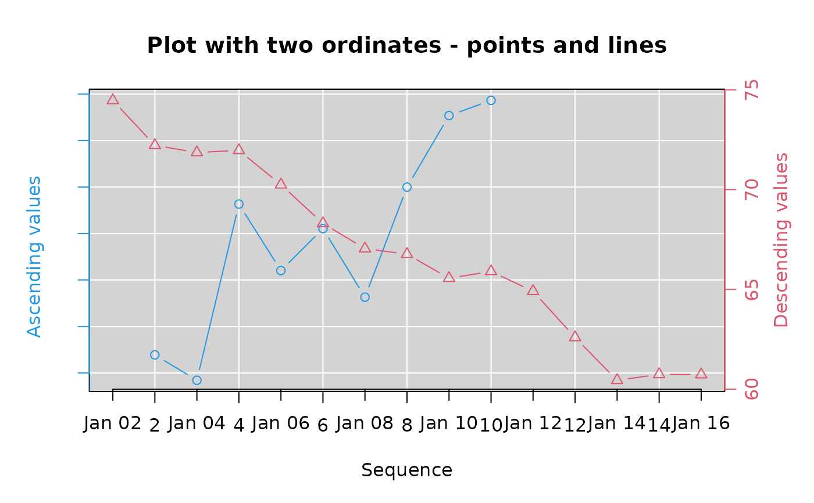
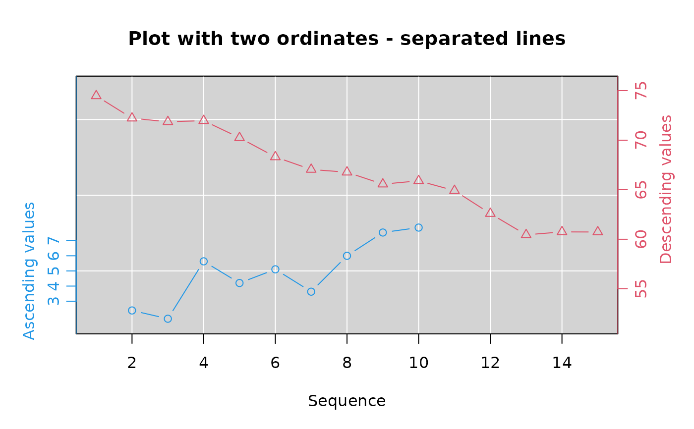
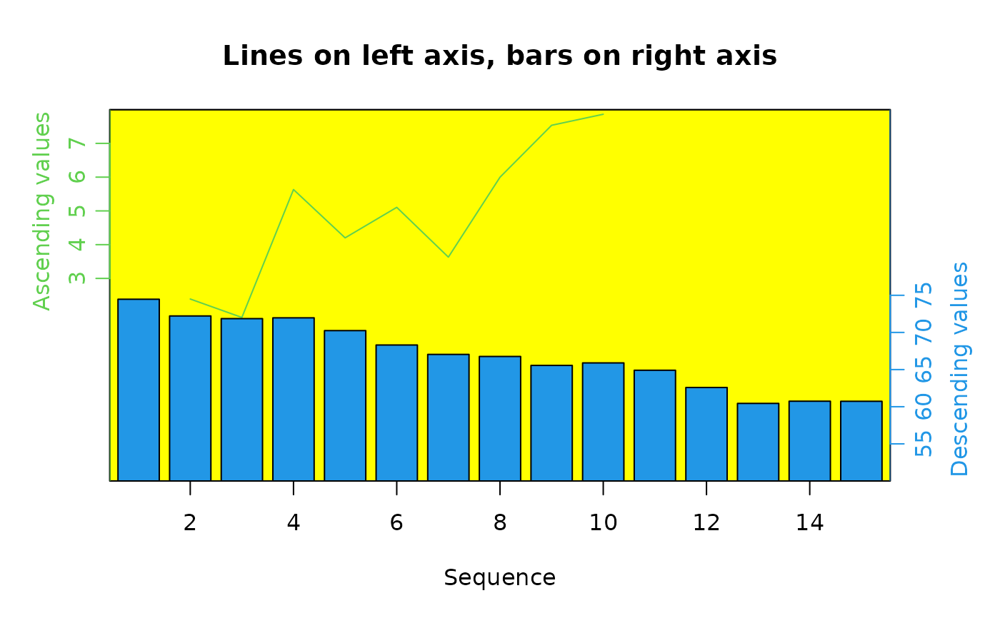
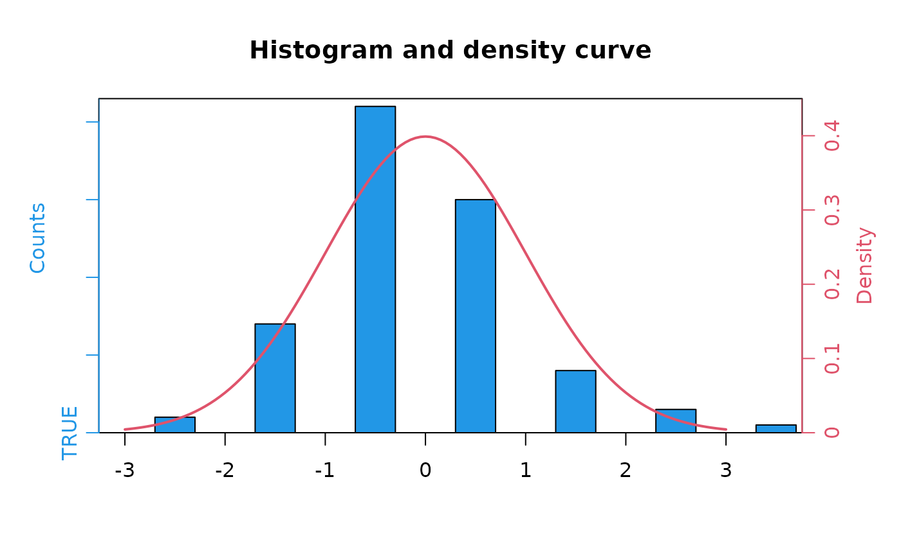
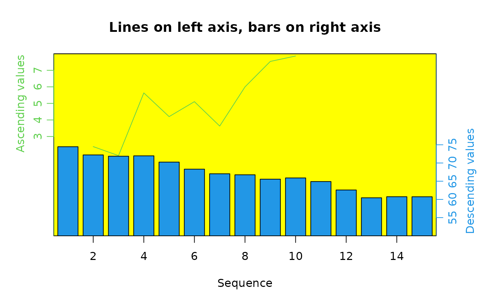
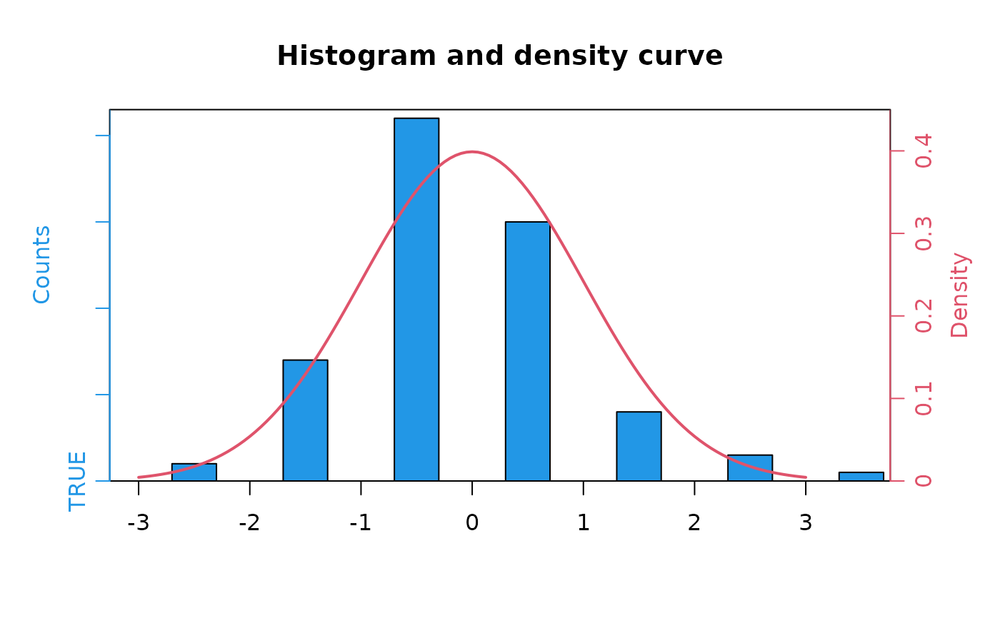

Plot with two ordinates
twoord.plot.RdTwo sets of values are displayed on the same plot with different ordinate scales on the left and right.
Usage
twoord.plot(lx,ly,rx,ry,data=NULL,main="",xlim=NULL,lylim=NULL,rylim=NULL,
mar=c(5,4,4,4),lcol=1,rcol=2,xlab="",lytickpos=NA,ylab="",ylab.at=NA,
rytickpos=NA,rylab="",rylab.at=NA,lpch=1,rpch=2,
type="b",xtickpos=NULL,xticklab=NULL,halfwidth=0.4,axislab.cex=1,
do.first=NULL,xaxt="s",...)Arguments
- lx,ly,rx,ry
y and optional x values for the plot
- data
an optional data frame from which to obtain the above values
- main
Title for the plot
- xlim
optional x limits as in plot
- lylim,rylim
optional y limits for the left and right axes respectively
- mar
optional margin adjustment, defaults to c(5,4,4,4)
- lcol,rcol
colors to distinguish the two sets of values
- xlab
X axis label as in plot
- lytickpos
Optional positions for the left axis tick labels.
- ylab
Left Y axis label as in plot
- ylab.at
Optional position for the left Y axis label
- rytickpos
Optional positions for the right axis tick labels.
- rylab
Right Y axis label
- rylab.at
Optional position for the right Y axis label
- lpch,rpch
plot symbols to distinguish the two sets of values
- type
as in plot
- xtickpos
Optional positions for x-axis tick labels.
- xticklab
Optional labels for x-axis. Useful for things like dates.
- halfwidth
Half the width of the bars in user units. The bars are centered on successive integers if no x values are supplied.
- axislab.cex
Character expansion for the axis labels and tick labels.
- do.first
Optional command(s) that will be executed immediately after the blank plot is displayed.
- xaxt
Whether to display the x-axis - "n" = no.
- ...
additional arguments passed to plot and points.
Details
twoord.plot automates the process of displaying two sets of values that have different ranges on the same plot. It is principally useful in illustrating some relationship between the values across the observations. It is assumed that the lx and rx values are at least adjacent, and probably overlapping.
It is best to pass all the arguments lx, ly, rx, ry, but the function will attempt to substitute sensible x values if one or two are missing.
If at least one of the type arguments is "bar", bars will be plotted instead of points or lines. It is best to plot the bars first (i.e. relative to the left axis) if the other type is points or lines, as the bars will usually obscure at least some of the points or lines. Using NA for the color of the bars will partially correct this. If both types are to be bars, remember to pass somewhat different x values or the bars will be overplotted.
Note that more values can be added to the plot using points or lines, but remember that these will be plotted relative to the left ordinate.
The do.first argument is useful for adding a background color or grid to the plot as shown in the first two examples.
Note
There are many objections to the use of plots with two different ordinate scales, and some of them are even sensible and supported by controlled observation. Many of the objections rest on assertions that the spatial arrangement of the values plotted will override all other evidence. Here are two:
The viewer will assume that the vertical position of the data points indicates a quantitative relationship.
To some extent. It is probably not a good idea to have the spatial relationship of the points opposed to their numerical relationship. That is to say, if one set of values is in the range of 0-10 and the other 20-100, it is best to arrange the plot so that the latter values are not plotted below the former. See the second example, which illustrates a method for separating the two series and offsetting the axes.
The viewer will assume that an intersection of lines indicates an intersection of values.
If the visual elements representing values can be arranged to avoid intersections, so much the better. Many people have no trouble distinguishing which visual elements are linked to which axis as long as they are both coded similarly, usually with colors and/or symbols. In the special case where there is an underlying relationship between the two such as the probability of that value occurring under some conditions, it may help to mark the point(s) where this occurs.
It may be useful to consider gap.plot or separate plots as an alternative.
Author
Jim Lemon (thanks to Christophe Dutang for the idea of using bars and lines in the same plot, Clair Crossupton for pointing out that dates on the x-axis weren't very good, Jacob Kasper for the axis character expansion and Ye Lin for finally motivating me to add the do.first argument.)
Examples
xval1 <- seq.Date(as.Date("2017-01-02"),
as.Date("2017-01-10"), by="day")
xval2 <- seq.Date(as.Date("2017-01-01"),
as.Date("2017-01-15"), by="day")
going_up<-seq(3,7,by=0.5)+rnorm(9)
going_down<-rev(60:74)+rnorm(15)
twoord.plot(2:10,going_up,1:15,going_down,xlab="Sequence",
ylab="Ascending values",rylab="Descending values",lcol=4,
main="Plot with two ordinates - points and lines",
do.first="plot_bg();grid(col=\"white\",lty=1)")
axis.Date(1,xval2)

# now separate the lines
twoord.plot(2:10,going_up,1:15,going_down,xlab="Sequence",
lylim=range(going_up)+c(-1,10),rylim=range(going_down)+c(-10,2),
ylab="Ascending values",ylab.at=5,rylab="Descending values",
rylab.at=65,lcol=4,main="Plot with two ordinates - separated lines",
lytickpos=3:7,rytickpos=seq(55,75,by=5),
do.first="plot_bg();grid(col=\"white\",lty=1)")

twoord.plot(2:10,going_up,1:15,going_down,xlab="Sequence",
lylim=range(going_up)+c(-1,10),rylim=range(going_down)+c(-10,2),
type=c("bar","l"),ylab="Ascending values",ylab.at=5,
rylab="Descending values",rylab.at=65,
main="Bars on left axis, lines on right axis",
lytickpos=3:7,rytickpos=seq(55,75,by=5),
lcol=3,rcol=4,do.first="plot_bg()")
 twoord.plot(2:10,going_up,1:15,going_down,xlab="Sequence",
lylim=c(-3,8),rylim=c(50,100),type=c("l","bar"),
ylab="Ascending values",rylab="Descending values",
lytickpos=3:7,rytickpos=seq(55,75,by=5),ylab.at=5,rylab.at=65,
main="Lines on left axis, bars on right axis",
lcol=3,rcol=4,do.first="plot_bg(\"yellow\")")

# histogram with density curve superimposed
xhist<-hist(rnorm(100),plot=FALSE)
xdens<-dnorm(seq(-3,3,by=0.05))
twoord.plot(xhist$mids,xhist$counts,seq(-3,3,by=0.05),
xdens,type=c("bar","l"),lcol=4,rcol=2,ylab="Counts",
rylab="Density",main="Histogram and density curve",
halfwidth=0.2,lylim=c(0,max(xhist$counts)+1),rylim=c(0,0.45),lwd=2)

twoord.plot(2:10,going_up,1:15,going_down,xlab="Sequence",
lylim=c(-3,8),rylim=c(50,100),type=c("l","bar"),
ylab="Ascending values",rylab="Descending values",
lytickpos=3:7,rytickpos=seq(55,75,by=5),ylab.at=5,rylab.at=65,
main="Lines on left axis, bars on right axis",
lcol=3,rcol=4,do.first="plot_bg(\"yellow\")")

# histogram with density curve superimposed
xhist<-hist(rnorm(100),plot=FALSE)
xdens<-dnorm(seq(-3,3,by=0.05))
twoord.plot(xhist$mids,xhist$counts,seq(-3,3,by=0.05),
xdens,type=c("bar","l"),lcol=4,rcol=2,ylab="Counts",
rylab="Density",main="Histogram and density curve",
halfwidth=0.2,lylim=c(0,max(xhist$counts)+1),rylim=c(0,0.45),lwd=2)
